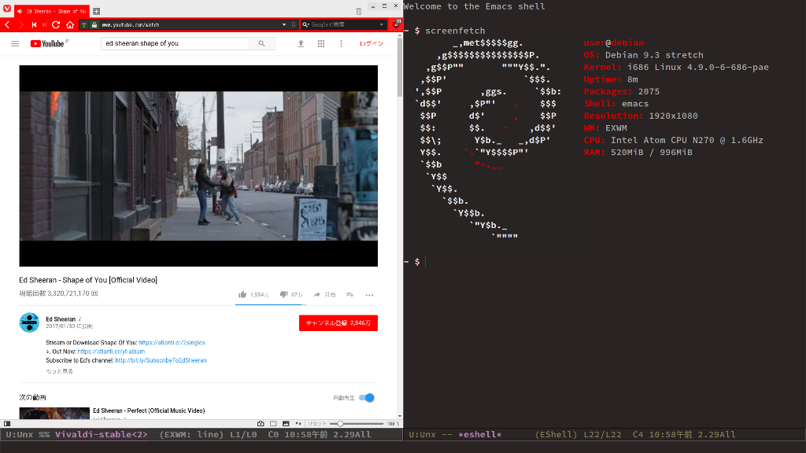

おまけ - EeePCとEmacsとEXWMと
その日，私はEmacsで新たなパッケージを試そうと，EeePCを動かしていた。
M-x p-ins exwm
Emacsのパッケージマネージャが自動でファイルをコンパイルしてゆく。それが済むと，init.elに次の行を加えた。
(require 'exwm)
(require 'exwm-config)
(exwm-config-default)
「何をしているんだ？」EeePCは訝しむ。「もう少しで終わるから待ってて」
そう言って私は，管理者権限で/usr/share/xsessionsにemacs.desktopというファイルを作成し，次の内容を書き加えた。
[Desktop Entry]
Name=EXWM
Comment=Emacs-based window manager
Exec=emacs
Type=Application
再起動し，ログイン画面で "EXWM" を選ぶ。これまで使っていたXfceではない。
その後ログインすると，見慣れたメニューは表示されず，emacsだけが起動する。故障ではない。その証拠に，間もなくEeePCは「おお…」と驚嘆の声を上げた。

なんと，画面にyoutubeの動画が映し出されたのだ。しかも480pとはいえ，コマ落ちもみられない。
「一体何をした？」EeePCが興奮気味に尋ねる。
「exwmを入れたんだ」
「EXWM？」「emacsで動くウインドウマネージャだよ」
emacsで動くウインドウマネージャ!
私はexwm 0.17のリリースとともにその存在を知り，『かっこいいから』という理由だけでそれをEeePCに導入した。インストールに苦労しなかったのも幸いだった。exwmはi3などの有名なタイル型マネージャと同様，余計な機能がないぶん圧倒的に軽い。初代DOOMなどの軽いゲームならおそらくEeePCでも動くので，Emacs上でSteamのゲームを遊ぶといった夢のある使い方もできるだろう。
まるで昔の輝きを取り戻したかのような軽快な動作に，EeePCは満足したようだ。
「すごいでしょ」私は得意気になった。
「ああ。だが」
EeePCはひとつ気にかかることがあった。
「こんなに簡単にインターネットが使えたら，また君はのめりこんでしまうんじゃないか？」
「あ…」
EXWMのwiki (https://github.com/ch11ng/exwm/wiki)
日本語で導入方法を紹介しているページ (https://medium.com/@h.taiju/emacs-as-window-manager-68ddcec3ba97)
解説動画 (https://www.youtube.com/watch?v=Gk9-q8tXbMs)
解説動画で作られた設定ファイルの例 (https://github.com/jamcha-aa/exwm-desktop)
(c) 2018 jamcha (jamcha.aa@gmail.com).